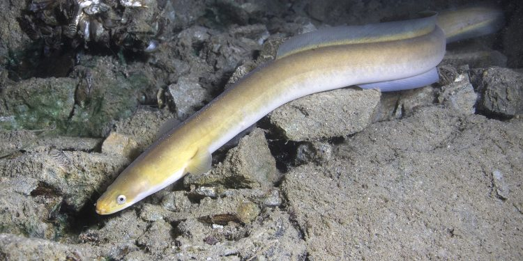
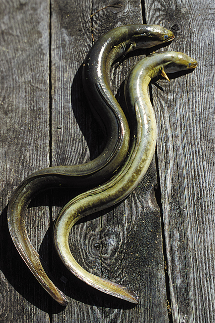
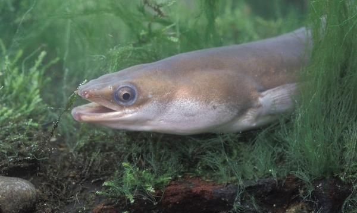

Węgorz, węgorz europejski (Anguilla anguilla) to ryba z rodziny węgorzowatych, przypominająca węża.  Wydłużone i walcowate ciało, pokryte grubą warstwą śluzu, jest zielonobrązowe lub szarobrązowe, spód jest żółtawy lub srebrny. Zaraz za odbytem ciało staje się bocznie spłaszczone. Łuska jest bardzo drobna, ukryta w skórze. Otwór gębowy wyposażony jest w kilka rzędów ostrych zębów. Węgorz nie posiada płetw brzusznych, a płetwa grzbietowa, ogonowa, i odbytowa są ze sobą połączone. Najczęściej łowione okazy mają 50 cm długości. Wzrok węgorza jest bardzo słaby. Głównym zmysłem jest węch. Samce dorastają do 40-70 cm, samice nawet do 2 m. Waga łowionych okazów waha się w granicach 0,2-2 kg. Osobniki dorosłe na jesień stają się srebrzyste, powiększają się też ich oczy. Takiego węgorza nazywamy węgorzem srebrzystym.
Występowanie i środowisko
Węgorza można spotkać we wszystkich wodach. Preferuje ciepłe wody, mocno zarośnięte roślinnością, z mulistym dnem. Można go też spotkać w rzekach o wartkim nurcie. Ryba ta występuje w prawie całej Europie, w Azji Mniejszej, w północnej części Afryki.
Tryb życia i zachowanie
To ryba wędrowna, a wędrówka odbywa się nocą. Prowadzi generalnie nocny tryb życia. Dzień spędza zagrzebana w mule lub w zaroślach. Węgorz żyje od 6 do 15 lat. Maksymalna długość życia to 88 lat. Tuż przed wędrówką na tarło, opisaną niżej, węgorze zmieniają swój kolor, przestają też żerować. Ich przewód pokarmowy ulega z czasem zanikowi, rozrastają się zaś gonady. Zgromadzone zapasy pokarmowe muszą rybie wystarczyć na całą wędrówkę, to około 6000 km! Węgorze w ciepłe, mokre dni mogą wychodzić z wody i pełzać po lądzie nawet kilka kilometrów. Umożliwia to oddychanie przez skórę. Młode osobniki mogą też pełzać po skałach pionowo w górę.
Pożywienie
To drapieżnik. Poluje na małe ryby, raki, faunę denną, w tym pijawki, ślimaki, zjada także ikrę ryb. Nie gardzi padliną. Młode zjadają drobny plankton zwierzęcy oraz larwy owadów.
Rozmnażanie
Wiosną węgorze wędrują do morza, gdzie odbywają tarło. Miejscem docelowym migracji jest wschodnia część Atlantyku. Tarło odbywa się na dużej głębokości, poniżej 100 m w Morzu Sargassowym niedaleko Wysp Bermudzkich. Z tarlisk już nigdy nie wracają, dorosłe osobniki prawdopodobnie giną zaraz po tarle, wycieńczone podróżą. Larwy, tak zwane leptocefale, są płaskie i przeźroczyste. Prowadzą pelagiczny tryb życia, dając się swobodnie unosić morskim prądom w kierunku wybrzeży Europy. Wędrówka trwa około 1,5-3 lat. W tym czasie larwy mają już długość do 7,5 cm. Wówczas wpływają do europejskich rzek, najczęściej we Francji (Loara, Severn) oraz Anglii. Dużo później trafiają do Bałtyku. Gdy docierają do Wisły osobniki mają już 20 cm długości. Do słodkich wód wpływają samice, a samce pozostają w ujściach rzek i czekają tam kilka lat na samice. Dojrzałość płciową samce uzyskują po 4-9 latach, samice po 9-10 latach, czasem nawet później.
Ciekawostki
Krew węgorza jest jadowita. Nie można dopuścić do kontaktu krwi węgorza z ranami na ciele. Zdecydowana większość populacji węgorza w Polsce pochodzi z zarybień. Węgorze w ciepłe, mokre dni mogą wychodzić z wody i pełzać po lądzie nawet kilka kilometrów. Młode osobniki mogą też pełzać po skałach pionowo w górę.
Okres ochronny: od 1 grudnia do 31 marca
Wymiar ochronny: 50 cm
Dobowy limit połowu: 2 sztuki
Rekord Polski: 6,43 kg 144 cm